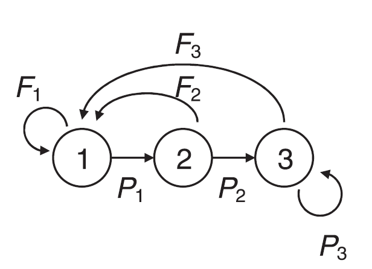
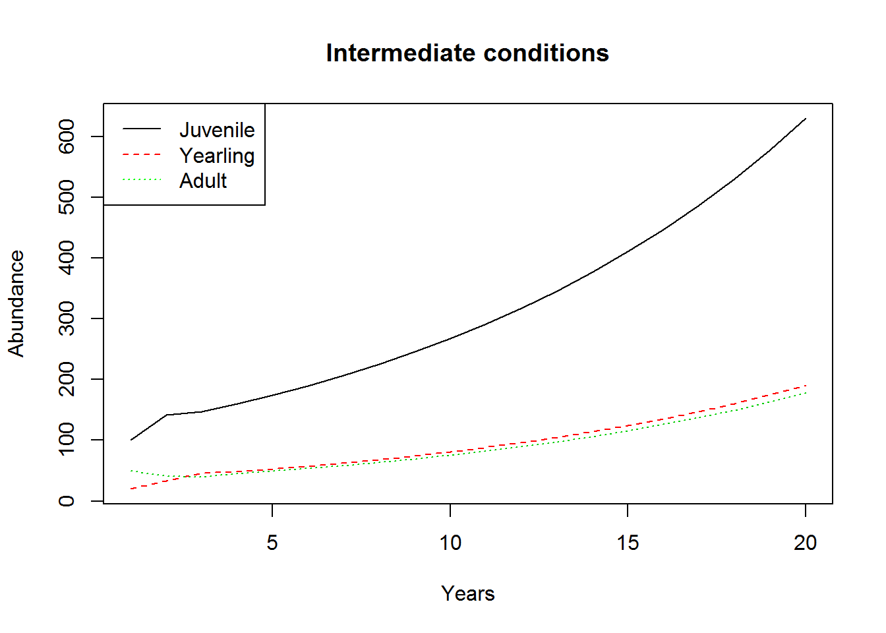
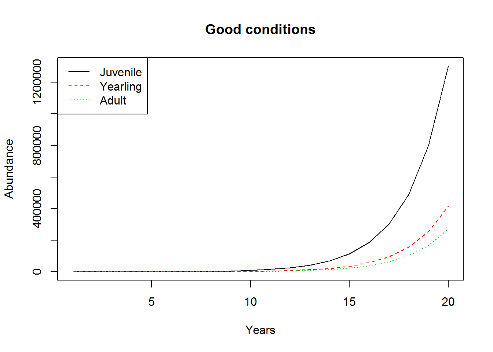
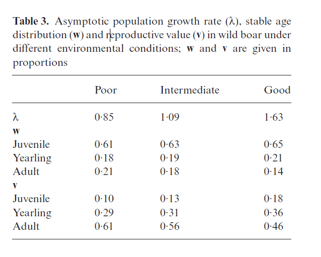

Class 19: Population dynamics & decisions
1 Class preliminaries
- Guest password for the day: eyelash
- Reading(s) for next class(es):
- Peterson, J. T., and J. W. Evans. 2003. Quantitative decision analysis for sport fisheries management. Fisheries 28:10-21. PDF
- Conroy, M. J., and J. T. Peterson. 2009. Integrating management, research, and monitoring: balancing the 3-legged stool. Pages 2-10 in S. B. Cederbaum, B. C. Faircloth, T. M. Terhune, J. Thompson, and J. P. Carroll, editors. Gamebird 2006: Quail VI and Perdix XII. 31 May - 4 June 2006. Warnell School of Forestry and Natural Resources, Athens, Georgia. PDF
- Conroy, M. J., and J. T. Peterson. 2009. Integrating management, research, and monitoring: balancing the 3-legged stool. Pages 2-10 in S. B. Cederbaum, B. C. Faircloth, T. M. Terhune, J. Thompson, and J. P. Carroll, editors. Gamebird 2006: Quail VI and Perdix XII. 31 May - 4 June 2006. Warnell School of Forestry and Natural Resources, Athens, Georgia.
- Peterson, J. T., and J. W. Evans. 2003. Quantitative decision analysis for sport fisheries management. Fisheries 28:10-21. PDF
- Class project:
- Be developing and documenting your decision model
- Final exam period-April 28th at 3pm.
- Link to class recording YouTube
- Today’s R script Class-19.R
1.1 Class overview & objectives
The objectives of this class are to
- Introduce population dynamics in decision making
- Temporal scale of decisions and equilibrium analysis
- Reinforce state dependent decisions
- Reinforce disconnect between scientific literature and applied decision making
- Further student exposure to building decision models in Netica.
1.2 Getting ready to go
- Netica file here
- Install libraries that we have not used yet.
install.packages("popbio")
2 Population dynamics & decisions
2.1 Overview
In many cases we as scientists use tools like matrix population models to understand how demographic rates interact and influence long term population dynamics. This is, at times, in conflict with management, where management may take a long term view for sustainability but needs to make decisions right now to meet management objectives.
Here we will walk through an analysis of boar dynamics. The analysis itself is done well, however we will see it is difficult to use this type of analysis to make decisions. To be clear there is nothing wrong with the study but rather we are looking at how one could use this type of analysis to make decisions and maybe take a different view.
The life cycle of the boar is illustrated below, which can be crafted into a matrix model. This study is pretty neat because it deals with demographics that are dependent on conditions (i.e., poor, intermediate, good). The P parameters represent transition probabilities, incorporating growth and survival as a simultaneous process. The F parameters represent fertilities.
 The circles represent stages: juvenile, yearling, and adult. Note there are 3 stages modeled and therefore the transition matrix should be a 3x3 matrix. The figure above can be represented as the matrix below:
\[\mathbf{A} = \left[\begin{array} {rrr} F_1 & F_2 & F_3 \\ P_1 & 0 & 0 \\ 0 & P_2 & P_3 \end{array}\right] \].
In poor conditions we can represent the demographic matrix as:
\[\mathbf{A_{poor}} = \left[\begin{array} {rrr} 0.13 & 0.56 & 1.64 \\ 0.25 & 0 & 0 \\ 0 & 0.31 & 0.58 \end{array}\right] \]
and code it up on R as
A_poor<- matrix(c(
0.13, 0.56, 1.64,
0.25,0,0,
0, 0.31, 0.58),nrow=3, ncol=3,
byrow=TRUE)
A_poor ## [,1] [,2] [,3]
## [1,] 0.13 0.56 1.64
## [2,] 0.25 0.00 0.00
## [3,] 0.00 0.31 0.58Similarly we can represent intermediate conditions as
\[\mathbf{A_{intermediate}} = \left[\begin{array} {rrr} 0.26 & 0.94 & 1.93 \\ 0.33 & 0 & 0 \\ 0 & 0.40 & 0.66 \end{array}\right] \]
in matrix notation and coded up as
A_intermediate<- matrix(c(
0.26, 0.94, 1.93,
0.33,0,0,
0, 0.4, 0.66),nrow=3, ncol=3,
byrow=TRUE)
A_intermediate ## [,1] [,2] [,3]
## [1,] 0.26 0.94 1.93
## [2,] 0.33 0.00 0.00
## [3,] 0.00 0.40 0.66Lastly we code up the good conditions demographic matrix as notation \[\mathbf{A_{good}} = \left[\begin{array} {rrr} 0.59 & 1.76 & 2.29 \\ 0.52 & 0 & 0 \\ 0 & 0.60 & 0.71 \end{array}\right] \]
and code
A_good<- matrix(c(
0.59, 1.76, 2.29,
0.52,0,0,
0, 0.6, 0.71),nrow=3, ncol=3,
byrow=TRUE)
A_good ## [,1] [,2] [,3]
## [1,] 0.59 1.76 2.29
## [2,] 0.52 0.00 0.00
## [3,] 0.00 0.60 0.71Good, we got the demographic matrices put together and we can potentially use that information to make management decisions.
2.1.1 Forecasting population dynamics
We can use matrix multiplication to easily forecast population dynamics given the demographic matrix and a vector of abundances for each stage.
\[\mathbf{N_{t+1}} = \left[\begin{array} {rrr} F_1 & F_2 & F_3 \\ P_1 & 0 & 0 \\ 0 & P_2 & P_3 \end{array}\right] \cdot \left[\begin{array}{r}N_{juvenile} \\N_{Yearling} \\N_{Adult} \end{array}\right] \]
We already have the transition matrices coded up (\(A\)) but we need a vector of stage specific abundances to get the dynamics going. Here we assume that we have 100 juveniles, 20 yearlings, and 50 adult boars.
N<- c(100,20,50) # STAGE SPECIFIC ABUNDANCENow we need to specify how many years to run out the population, let’s do 20.
years<- 20Now we can set up a 3x20 matrix to hold our population abundances in for the forecast and we set the initial abundance to our vector of abundances.
# A MATRIX TO HOLD ABUNDANCES
output<- matrix(0,3, years)
output[,1]<- NNow we can use our old friend the for loop to forcast the dynamics. Note the use of i-1 and we are going from 2 to 20. That is because we have already set year 1 to the intial abundance.
for(i in 2:years)
{
# SOME MATRIX MULTIPLICATION MAGIC
output[,i]<- A_poor %*% output[,i-1]
}We can use matplot() to easily plot the dynamics of the population given poor conditions.
matplot(t(output),type='l',
xlab="Years",
ylab="Abundance",
main="Poor conditions")
legend("topright",legend=c("Juvenile",
"Yearling","Adult"),
lty=c(1,2,3),
col=c("black","red","green")) We can redo the same process for intermediate conditions.
We can redo the same process for intermediate conditions.
N<- c(100,20,50) # STAGE SPECIFIC ABUNDANCE
years<- 20
# A MATRIX TO HOLD ABUNDANCES
output<- matrix(0,3, years)
output[,1]<- N
for(i in 2:years)
{
# SOME MATRIX MULTIPLICATION MAGIC
output[,i]<- A_intermediate %*% output[,i-1]
}
matplot(t(output),type='l',
xlab="Years",
ylab="Abundance",
main="Intermediate conditions")
legend("topleft",legend=c("Juvenile",
"Yearling","Adult"),
lty=c(1,2,3),
col=c("black","red","green"))
And finally, we can redo the same process for good conditions.
N<- c(100,20,50) # STAGE SPECIFIC ABUNDANCE
years<- 20
# A MATRIX TO HOLD ABUNDANCES
output<- matrix(0,3, years)
output[,1]<- N
for(i in 2:years)
{
# SOME MATRIX MULTIPLICATION MAGIC
output[,i]<- A_good %*% output[,i-1]
}
matplot(t(output),type='l',
xlab="Years",
ylab="Abundance",
main="Good conditions")
legend("topleft",legend=c("Juvenile",
"Yearling","Adult"),
lty=c(1,2,3),
col=c("black","red","green"))
2.1.2 Growth rate, Sensitivity & Elasticity
2.1.2.1 Growth Rate: Lambda
One neat thing from the transition matrix is that you can do an eigen analysis and figure out if the population is growing or not, a value referred to as lambda (\(\lambda\)).
lambda_poor<-eigen(A_poor)$values[1]
lambda_poor<-Re(lambda_poor)# convert from imaginaryThat was a lot of work to get the \(\lambda\). The popbio package has functions that will do this heavy lifting for us, lambda() specifically.
library("popbio")
lambda_poor## [1] 0.8496202lambda(A_poor)## [1] 0.8496202Ohhh, that does not look good for that population
lambda_intermediate<- lambda(A_intermediate)
lambda_good<- lambda(A_good)That jives with the paper results in table 3 below. But keep in mind that \(\lambda\) represents long term population growth and is not dependeng on initial abundances!

2.1.2.2 Sensitivity: s
Matrix population models are commonly used to identify management strategies by performing a sensitivity analysis of the transition matrix. Matrix values with a high sensitivity should have a disproportionate effect on population dynamics. For example, if a sensitivity analysis showed that adult fertility had the highest sensitivity value then management actions that reduce adult fertility might be effective. There is a lot of behind the scenes matrix stuff but the various functions in popbio to the work for us. Specifically we can use the following functions:
reproductive.value(A)calculates reproductive valuestable.stage(A)calculates stable stage distributionsensitivity(A)caluclates the sensitivityelasticity(A)calculates the elasticity
library(popbio)
reproductive.value(A_poor)## [1] 1.000000 2.878481 6.082630stable.stage(A_poor)## [1] 0.6125324 0.1802371 0.2072304reproductive.value(A_intermediate)## [1] 1.000000 2.513282 4.494819stable.stage(A_intermediate)## [1] 0.6308679 0.1911048 0.1780273reproductive.value(A_good)## [1] 1.000000 1.998144 2.491744stable.stage(A_good)## [1] 0.6546196 0.2089594 0.1364210s_poor<-sensitivity(A_poor) # SENSITIVITY FOR MATRIX A
s_poor # sensitivity matrix## [,1] [,2] [,3]
## [1,] 0.2560917 0.07535477 0.08664031
## [2,] 0.7371551 0.21690726 0.24939248
## [3,] 1.5577114 0.45835521 0.52700101s_intermediate<-sensitivity(A_intermediate) # SENSITIVITY FOR MATRIX A
s_intermediate # sensitivity matrix## [,1] [,2] [,3]
## [1,] 0.3300608 0.09998323 0.09314126
## [2,] 0.8295360 0.25128610 0.23409029
## [3,] 1.4835635 0.44940657 0.41865313s_good<-sensitivity(A_good) # SENSITIVITY FOR MATRIX A
s_good # sensitivity matrix## [,1] [,2] [,3]
## [1,] 0.4635864 0.1479802 0.09661017
## [2,] 0.9263124 0.2956858 0.19304104
## [3,] 1.1551387 0.3687288 0.24072784What is going on with all those numbers? Some of the values were 0, so why is there as sensitivity value for them?
2.1.2.3 Elasticity: e
Elasticities take a sensitivity matrix and make the values proportional to the size of the matrix value, which clears out the zero values and puts the resulting matrix in terms of its effect on population growth rate.
e_poor<-elasticity(A_poor)
e_poor # elasticity matrix## [,1] [,2] [,3]
## [1,] 0.03918448 0.04966769 0.1672396
## [2,] 0.21690726 0.00000000 0.0000000
## [3,] 0.00000000 0.16723957 0.3597614e_intermediate<-elasticity(A_intermediate)
e_intermediate # elasticity matrix## [,1] [,2] [,3]
## [1,] 0.07877467 0.08627289 0.1650132
## [2,] 0.25128610 0.00000000 0.0000000
## [3,] 0.00000000 0.16501321 0.2536399e_good<-elasticity(A_good)
e_good # elasticity matrix## [,1] [,2] [,3]
## [1,] 0.1679006 0.1598770 0.1358088
## [2,] 0.2956858 0.0000000 0.0000000
## [3,] 0.0000000 0.1358088 0.1049190Now these matrices generally form management recommendations and so on that come out of this type of work. But there are come issues here because conditions vary over time and the underlying demographics do was well.
2.1.3 Uncertainty in conditions
We can start to look at the effect of uncertainty in conditions using a stochastic projection.
out<-stoch.projection(
matrices=list(A_poor,A_intermediate,
A_good),
n0 = c(3000,900, 800),
tmax=100,
nreps=5000,
prob= c(0.35,0.35,0.30),
nmax=100000) # cut off at 100k all stages
gr<-stoch.growth.rate(matrices=list(A_poor,A_intermediate,
A_good), prob = c(0.35,0.35,0.30)) ## [1] Calculating stochastic growth at time 1
## [1] Calculating stochastic growth at time 10000
## [1] Calculating stochastic growth at time 20000
## [1] Calculating stochastic growth at time 30000
## [1] Calculating stochastic growth at time 40000
## [1] Calculating stochastic growth at time 50000gr ## $approx
## [1] 0.08642614
##
## $sim
## [1] 0.1049746
##
## $sim.CI
## [1] 0.1023211 0.1076281The above code will give us some idea of the growth rate
2.1.3.1 Implications for management
For the results the authors recommended the following
hunting, as a measure to control populations, should be adjusted to changing environmental conditions (State dependent decision)
Growing populations under good environmental conditions, particularly following a full mast of trees, yearly survival of juveniles should be reduced most, to approximately 15% (including natural postnatal mortality), assuming 60% survival in yearlings and 70% in adults, in order to limit growth rate to \(\lambda \leq 1\)
Our analysis shows that preferential hunting of adults in favourable habitats would be ineffective, because even if survival of adults was below 10% (assuming 50% survival in juveniles and 60% survival in yearlings) population growth would not drop to \(\lambda = 1\)
For poor environments, on the other hand, our elasticity analysis indicated that decreasing adult survival would lead to the most effective reduction of population growth
Questions
- As a decision maker how do you implement an action given these recommendations?
- How do you account for uncertainty?
- Do recommendations from equilibrium analyses like this match the temporal scale of management?
- It was recommended that when conditions are poor (harsh winter poor acorn mast) managers should decrease adult survival by some management action. However, initial conditions (i.e., how many pigs) do not influence demographic sensitivity and elasticity analyses. What do you do when there are only a handful of adults around? Do you expend effort to decrease survival or should you adapt your decision to the current system state?
- How do you incorporate management objectives.
2.2 Reframing as a decision model
Let’s take this case study are try to recast it as a decision model. First we need to set up the model and influence diagram. Let’s start with Pig.neta, which for the sake of time has several nodes built in. You will notice nodes for the current abundance and future abundance as well as a node for conditions as they influence the future population size by altering demographic rates.
n0<-N
F<-c(0.13,0.56,1.64)
S<-c(0.25,0.31,0.58)
yy<-c(sum(n0*F), # Juveniles
n0[1]*S[1] , # Yearlings
n0[2]*S[2]+n0[3]*S[3])# Adults
# COMPARE TO MATRIX CALCULATION
y<-A_poor %*% N
cbind(y,yy) # winner winner ## yy
## [1,] 106.2 106.2
## [2,] 25.0 25.0
## [3,] 35.2 35.2OK, we can use some conventional math to get the same dynamics and not have to use the matrix. This gives us some flexibility in simulations, specifically, we can add uncertainty.
Now let’s be good and acknowledge at least some uncertainty. There is most certainly other bits of uncertainty at play (i.e., observation, structural) here but for sake of time we simply throw some parametric uncertainty in the process using the rpois() and rbinom() functions to simulate the number of juvenile, yearling, and adult pigs in the next year.
n0<-N
F<-c(0.13,0.56,1.64)
S<-c(0.25,0.31,0.58)
yy<-c(sum(rpois(3,n0*F)), # Juveniles
rbinom(1,n0[1],S[1]), # Yearlings
rbinom(1,n0[2],S[2])+rbinom(1,n0[3],S[3]))# AdultsNow we can generalize the code above to do a big stochastic simulation to generate the many many outcomes. First we need to set up the fertility and survivals a bit differently to efficiently simulate from.
F_j=c(0.13,0.56,1.64)# poor, intermediate, good
F_y=c(0.56,0.94,1.93)
F_a =c(1.64,1.76,2.29)
S_j=c(0.25,0.31,0.58)
S_y=c(0.31,0.40,0.66)
S_a =c(0.58,0.60,0.71) Why did I do this? Well, r can handle vectors easily using brackets. What I mean here is if i have a vector with 3 values in it, I can use that indexing to make many many values. Let’s demonstrate.
x<- c(5,6,7)
# a vector of indices
indexes<- c(1,1,3,2,2,1,1)# 1,2,3 indexes condition
x[indexes] # EXPANDS X GIVEN THE INDEX## [1] 5 5 7 6 6 5 5We did that so we can efficiently use the conditions to index the stage specific appropriate fertility and survival. First we will set up the data.frame() with randomly selected conditions and initial abundances for each state.
set.seed(8433)
reps<- 250000
outcomes<- data.frame(
condition=sample(c(1:3),reps,replace=TRUE),
n0_j=rpois(reps,N[1]),
n0_y=rpois(reps,N[2]),
n0_a= rpois(reps,N[3])) That gives us a 250k row of values.
head(outcomes)## condition n0_j n0_y n0_a
## 1 2 106 12 46
## 2 2 115 16 54
## 3 2 101 23 43
## 4 1 119 19 49
## 5 1 108 28 46
## 6 1 121 21 49Now we can forecast the future abundance for each stage given the conditions. Note that we are only doing this for 1 year. First we will forecast juveniles.
outcomes$n1_j<-rpois(reps,outcomes$n0_j*F_j[outcomes$condition])+
rpois(reps,outcomes$n0_y*F_y[outcomes$condition])+
rpois(reps,outcomes$n0_a*F_a[outcomes$condition])Now we can do yearling and adults.
outcomes$n1_y<- rbinom(reps,outcomes$n0_j,S_j[outcomes$condition])
outcomes$n1_a<- rbinom(reps,outcomes$n0_y,S_y[outcomes$condition])+
rbinom(reps,outcomes$n0_a,S_a[outcomes$condition])Like we did before, we discretize the outcomes to put in a decision model. First we need to summarize the output to make sure we discretize appropriately.
rngs<- apply(outcomes,2,range)Looks like the range for n0 was 53 to 151 for juveniles, 3 to 43 for yearlings, and
22 to 86 for adults. the future numbers were 50 to 476 for juveniles, 4 to 90 for yearlings, and
14 to 80 for adults.
2.2.1 Discretizing outcomes
Now we can discretize our outcomes for input into Netica.
Now we can discretize Juveniles using the cut() function.
# Juveniles Initial Abundance
bins<- seq(0,150,length.out=5)
labs<- paste(bins[-length(bins)],bins[-1],sep="-")
outcomes$n0_j_bin<-cut(outcomes$n0_j,
breaks=bins,
labels=labs,
include.lowest=TRUE)
# Juveniles Future Abundance
bins<- seq(0,500,length.out=5)
labs<- paste(bins[-length(bins)],bins[-1],sep="-")
outcomes$n1_j_bin<-cut(outcomes$n1_j,
breaks=bins,
labels=labs,
include.lowest=TRUE) And Yearlings
# Yearling Initial Abundance
bins<- seq(0,50,length.out=5)
labs<- paste(bins[-length(bins)],bins[-1], sep = "-")
outcomes$n0_y_bin<- cut(outcomes$n0_y,
breaks=bins,
labels=labs,
include.lowest=TRUE)
# Yearling Future Abundance
bins<- seq(0,90,length.out=5)
labs<- paste(bins[-length(bins)],bins[-1],sep="-")
outcomes$n1_y_bin<- cut(outcomes$n1_y,
breaks=bins,
labels=labs,
include.lowest=TRUE) And now for adults
# Adult Initial Abundance
bins<- seq(0,90,length.out=5)
labs<- paste(bins[-length(bins)],bins[-1],sep="-")
outcomes$n0_a_bin<- cut(outcomes$n0_a,
breaks=bins,
labels=labs,
include.lowest=TRUE)
# Adult Future Abundance
bins<- seq(0,80,length.out=5)
labs<- paste(bins[-length(bins)],bins[-1],sep="-")
outcomes$n1_a_bin<- cut(outcomes$n1_a,
breaks=bins,
labels=labs,
include.lowest=TRUE)Here I will use the prop.table() function to quickly calculate the probability of each outcome. Recall before we used frequencies. Just a different way to do the same thing.
prop.table(table(outcomes$n0_j_bin))##
## 0-37.5 37.5-75 75-112.5 112.5-150
## 0.000000000 0.005520022 0.885583542 0.108896436prop.table(table(outcomes$n0_y_bin))##
## 0-12.5 12.5-25 25-37.5 37.5-50
## 0.038296 0.849056 0.112428 0.000220prop.table(table(outcomes$n0_a_bin))##
## 0-22.5 22.5-45 45-67.5 67.5-90
## 0.000004 0.266392 0.724720 0.008884And now we can do it for the future population given the current population size.
library(reshape2) # for the dcast function
outcomes$tmp<-1 # a value to sum over for counts
future_juveniles<- dcast(data=outcomes,
formula=condition+n0_j_bin~n1_j_bin,
value.var="tmp",
fun.aggregate=sum,
drop=FALSE)
future_yearlings<- dcast(data=outcomes,
formula=condition+n0_y_bin~n1_y_bin,
value.var="tmp",
fun.aggregate=sum,
drop=FALSE)
future_adults<- dcast(data=outcomes,
formula=condition+n0_a_bin~n1_a_bin,
value.var="tmp",
fun.aggregate=sum,
drop=FALSE) Using the tables we can calculate the conditional probabilities of each outcome. Notices the use of brackets and dropping the first 2 columns so I can calculate these correctly.
future_juveniles[,-c(1,2)]<- prop.table(as.matrix(future_juveniles[,-c(1,2)]),1)
future_yearlings[,-c(1,2)]<- prop.table(as.matrix(future_yearlings[,-c(1,2)]),1)
future_adults[,-c(1,2)]<- prop.table(as.matrix(future_adults[,-c(1,2)]),1)Tada! The conditional probability tables.
future_juveniles## condition n0_j_bin 0-125 125-250 250-375 375-500
## 1 1 0-37.5 NaN NaN NaN NaN
## 2 1 37.5-75 0.90184049 0.09815951 0.000000e+00 0.00000000
## 3 1 75-112.5 0.89073605 0.10926395 0.000000e+00 0.00000000
## 4 1 112.5-150 0.85807667 0.14192333 0.000000e+00 0.00000000
## 5 1 <NA> NaN NaN NaN NaN
## 6 2 0-37.5 NaN NaN NaN NaN
## 7 2 37.5-75 0.10786517 0.89213483 0.000000e+00 0.00000000
## 8 2 75-112.5 0.02288305 0.97710338 1.357239e-05 0.00000000
## 9 2 112.5-150 0.00384362 0.99615638 0.000000e+00 0.00000000
## 10 2 <NA> NaN NaN NaN NaN
## 11 3 0-37.5 NaN NaN NaN NaN
## 12 3 37.5-75 0.00000000 0.19058296 8.094170e-01 0.00000000
## 13 3 75-112.5 0.00000000 0.01075804 9.718460e-01 0.01739599
## 14 3 112.5-150 0.00000000 0.00000000 8.618566e-01 0.13814342
## 15 3 <NA> 0.00000000 0.00000000 0.000000e+00 1.00000000future_yearlings## condition n0_y_bin 0-22.5 22.5-45 45-67.5 67.5-90
## 1 1 0-12.5 0.31868132 0.68131868 0.000000e+00 0.0000000
## 2 1 12.5-25 0.32130645 0.67860842 8.512933e-05 0.0000000
## 3 1 25-37.5 0.32118991 0.67870231 1.077818e-04 0.0000000
## 4 1 37.5-50 0.17647059 0.82352941 0.000000e+00 0.0000000
## 5 2 0-12.5 0.06202532 0.93291139 5.063291e-03 0.0000000
## 6 2 12.5-25 0.05840470 0.93417793 7.417369e-03 0.0000000
## 7 2 25-37.5 0.06123751 0.93132043 7.442058e-03 0.0000000
## 8 2 37.5-50 0.10526316 0.89473684 0.000000e+00 0.0000000
## 9 3 0-12.5 0.00000000 0.04087953 8.445339e-01 0.1145866
## 10 3 12.5-25 0.00000000 0.04614974 8.455818e-01 0.1082684
## 11 3 25-37.5 0.00000000 0.04987796 8.410273e-01 0.1090948
## 12 3 37.5-50 0.00000000 0.10526316 8.947368e-01 0.0000000future_adults## condition n0_a_bin 0-20 20-40 40-60 60-80
## 1 1 0-22.5 1.0000000000 0.00000000 0.00000000 0.000000e+00
## 2 1 22.5-45 0.0132829033 0.97640596 0.01031114 0.000000e+00
## 3 1 45-67.5 0.0002001167 0.76297840 0.23680480 1.667639e-05
## 4 1 67.5-90 0.0000000000 0.09541985 0.90203562 2.544529e-03
## 5 2 0-22.5 NaN NaN NaN NaN
## 6 2 22.5-45 0.0050230973 0.94488048 0.05009643 0.000000e+00
## 7 2 45-67.5 0.0000000000 0.56880521 0.43094574 2.490536e-04
## 8 2 67.5-90 0.0000000000 0.03262411 0.94468085 2.269504e-02
## 9 3 0-22.5 NaN NaN NaN NaN
## 10 3 22.5-45 0.0000000000 0.33799565 0.66168749 3.168568e-04
## 11 3 45-67.5 0.0000000000 0.03610606 0.90560283 5.829111e-02
## 12 3 67.5-90 0.0000000000 0.00000000 0.33561644 6.643836e-01write.csv(future_juveniles,"future_juveniles.csv")Ok, now we are going to get into trying to cobble together a decision network for this case study.